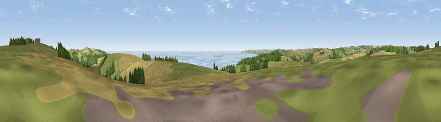

Viewpoint near Stoke Fleming
#2196 in England · top 6% of its area beats it · near Stoke FlemingWhere it is
The exact computed spot (SX 86875 49750). Click the marker for map links.
The view, rendered

A 360° render of this exact spot computed from the terrain model, tree cover and land cover — summer colours, afternoon light, calibrated against photographs of famous viewpoints. Real trees, hedges and buildings will differ in detail.
The panorama
Grey silhouette: terrain skyline in each direction (720 bearings, Earth curvature and refraction included). Dashed green: skyline with trees (+15 m) and buildings (+8 m) as obstacles. Blue strip: how far the ground is visible on each bearing.
Where the view opens
Wedge length = distance to the farthest visible ground on that bearing (vegetation-aware). Rings at 10, 25 and 50 km.
What fills the view
39% grassland · 33% cropland · 21% water · 6% woodland ·
Angular shares of the visible panorama (visual magnitude), not map area. Landscape diversity 0.55 (0–1 Shannon).
Key numbers
More beautiful places nearby
The staircase of upgrades: each row has a higher view potential than everything closer. Driving times are estimates from straight-line distance, calibrated against real road routing — check an actual route before setting out.
| Place | Direction | Drive | Score |
|---|---|---|---|
| Viewpoint near Dartmouth | NNE · 1 km | ~2 min | 79.2 |
| Viewpoint near Kingswear | E · 1 km | ~3 min | 80.2 |
| Viewpoint near Kingswear | E · 3 km | ~8 min | 81.7 |
| Viewpoint near Kingswear | ENE · 4 km | ~10 min | 83.8 |
| Viewpoint near East Prawle | SW · 17 km | ~30 min | 84.6 |
| High Peak | NNE · 43 km | ~63 min | 85.3 |
| Golden Cap | NE · 68 km | ~92 min | 88.7 |
| The Knoll | ENE · 77 km | ~100 min | 91.0 |
50.33678, -3.59095 · source: screening · position refined by local search. Computed location — check access rights before visiting.